Note
Go to the end to download the full example code.
RobustWorkflow¶
This tutorial follows the robust_workflow notebook and demonstrates the
RobustWorkflow class. The workflow can process data streams
that are not cleanly stationary: with operate_safe=False it will, when
needed, drop an initial fraction of the stream to find a stationary tail and
return “ball-park” statistics (flagged in the result metadata) rather than
aborting.
For each signal the procedure is the same as in the notebook:
build / load the signal into a
DataStream,set up
RobustWorkflow(operate_safe=False, verbosity=2)(high verbosity so the intermediate steps are plotted),plot the raw signal with
plot_signal_basic_stats(),call
process_data_streamto get the statistics, andre-plot the signal with its mean, confidence interval, and SSS start.
For clean single traces the DataStream Class guide is simpler; for many runs
see Ensemble Analysis. RobustWorkflow assumes equally spaced time points.
Setup¶
RobustWorkflow displays its plots (it calls plt.show() and then
closes the figure). The small keep_figures helper keeps those figures open
just long enough for the documentation gallery to capture the workflow’s own
output – it is not needed in a notebook or script.
import contextlib
import pprint
from pathlib import Path
import matplotlib.pyplot as plt
import numpy as np
import pandas as pd
import quends as qnds
def example_data_dir() -> Path:
"""Find the shared example data directory during script or gallery runs."""
starts = []
if "__file__" in globals():
starts.append(Path(__file__).resolve())
starts.append(Path.cwd().resolve())
for start in starts:
for parent in [start, *start.parents]:
for candidate in (parent / "examples" / "data", parent / "data"):
if candidate.is_dir():
return candidate
raise FileNotFoundError("Could not locate examples/data")
DATA_DIR = example_data_dir()
@contextlib.contextmanager
def keep_figures():
_close = plt.close
plt.close = lambda *a, **k: None
try:
yield
finally:
plt.close = _close
Synthetic data: linear transient to a plateau with some noise¶
A linear ramp into a flat signal, plus noise. With verbosity=2 the
workflow shows its intermediate steps: the raw signal, the autocorrelation
used to set the averaging window, and the smoothed signal with the detected
start of statistical steady state (SSS).
arr_time = np.linspace(start=0, stop=1000, num=1001)
arr_signal = np.zeros_like(arr_time)
n_pts = arr_signal.shape[0]
for i_arr in range(100):
arr_signal[i_arr] = 0.05 * arr_time[i_arr]
for i_arr in range(100, n_pts):
arr_signal[i_arr] = arr_signal[99]
np.random.seed(42)
arr_signal += np.random.normal(loc=0.0, scale=0.1, size=arr_signal.shape)
my_label = "Linear Transient with Noise"
ds_flat = qnds.DataStream(pd.DataFrame({"time": arr_time, "flux": arr_signal}))
col = "flux"
my_wrkflw = qnds.RobustWorkflow(operate_safe=False, verbosity=2)
with keep_figures():
# Plot raw signal
my_wrkflw.plot_signal_basic_stats(ds_flat, col, label=my_label)
# Get statistics
my_stats = my_wrkflw.process_data_stream(ds_flat, col)
# Plot trace with mean and start of steady state
if not my_stats[col]["metadata"]["mitigation"] == "Drop":
my_wrkflw.plot_signal_basic_stats(ds_flat, col, stats=my_stats, label=my_label)
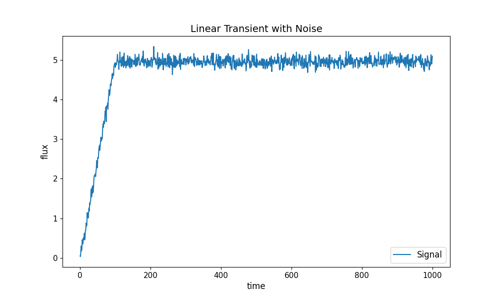
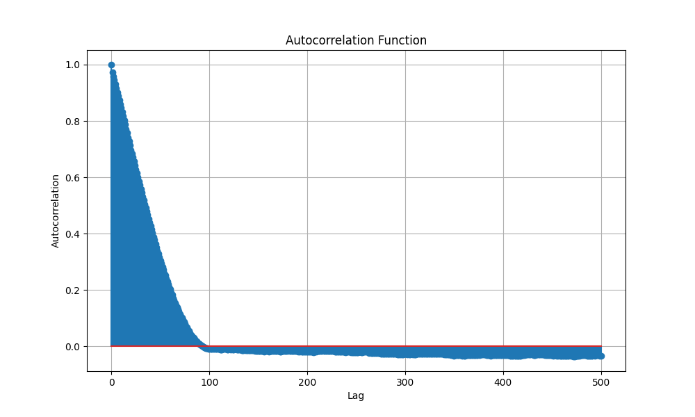
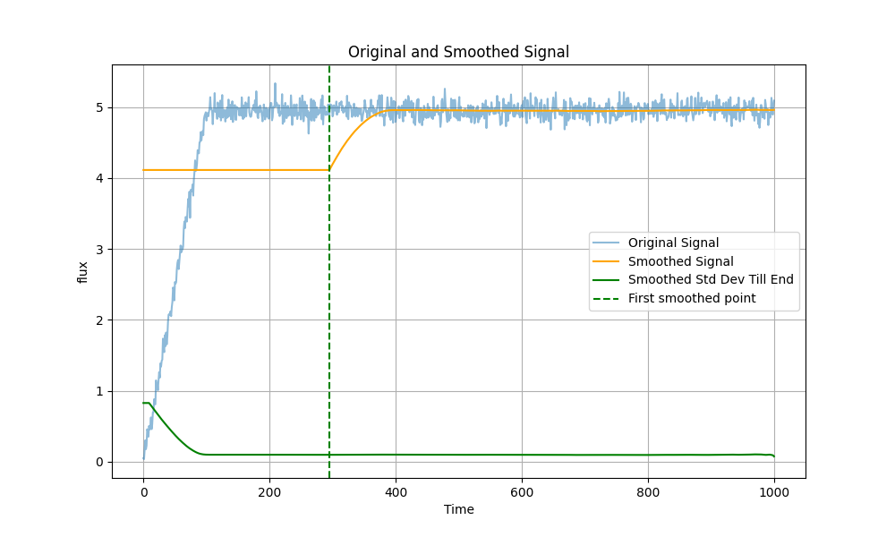
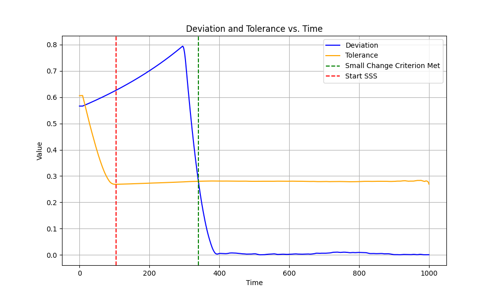
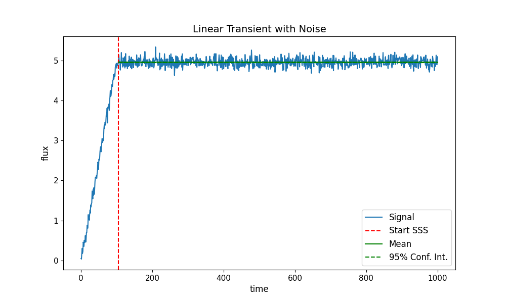
Original size of data stream: 1001 points.
After enforcing start time there are 1001 points left.
stats decorrelation length 74 gives smoothing window of 296 points.
Getting start of SSS based on smoothed signal:
Index where criterion is met: 341
Rolling window: 296
time where criterion is met: 341.0
time at start of SSS (adjusted for rolling window): 104.0
The dictionary my_stats holds the numerical results; metadata reveals
how the data was processed. Here mitigation: None / status: Regular
means no special handling was needed.
pprint.pprint(my_stats)
{'flux': {'ci_method': 'normal',
'confidence_interval': (4.94708601627662, 4.960092784311302),
'confidence_level': 0.95,
'effective_sample_size': 897,
'ess_blocks': 178.1770846258308,
'independence_status': 'independent',
'independent': True,
'ljungbox_lags': [5, 10],
'ljungbox_pvalue': 0.9704167699780076,
'ljungbox_pvalues': [0.9966734615909969, 0.9704167699780076],
'mean': 4.953589400293961,
'mean_uncertainty': 0.0033180530700721244,
'metadata': {'mitigation': 'None', 'status': 'Regular'},
'n_short_averages': 179,
'pm_std': (4.950271347223889, 4.956907453364033),
'se_effective_n': 179.0,
'se_method': 'iid_blocks',
'sss_start': np.float64(104.0),
'start_time': 0.0,
'variance': 0.001970696235470894,
'window_size': 5}}
Regular signals: CGYRO¶
A well-behaved CGYRO run. The observable is the third column (after the index
and time), exactly as in the notebook.
data_paths = [DATA_DIR / "cgyro" / "output_nu0_02.csv"]
col = pd.read_csv(data_paths[0]).columns[2] # 3rd column (after index, time)
data_stream = qnds.from_csv(data_paths[0], col)
print("The data stream contains the following variables:")
for column, name in enumerate(data_stream.variables()):
print(f"{column}: {name}")
my_wrkflw = qnds.RobustWorkflow(operate_safe=False, verbosity=2)
with keep_figures():
my_wrkflw.plot_signal_basic_stats(data_stream, col, label=data_paths[0])
my_stats = my_wrkflw.process_data_stream(data_stream, col)
if not my_stats[col]["metadata"]["mitigation"] == "Drop":
my_wrkflw.plot_signal_basic_stats(
data_stream, col, stats=my_stats, label=data_paths[0]
)
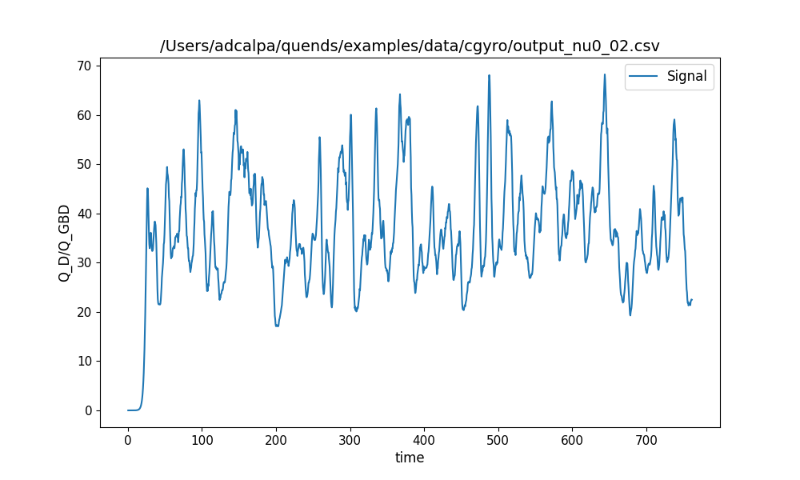
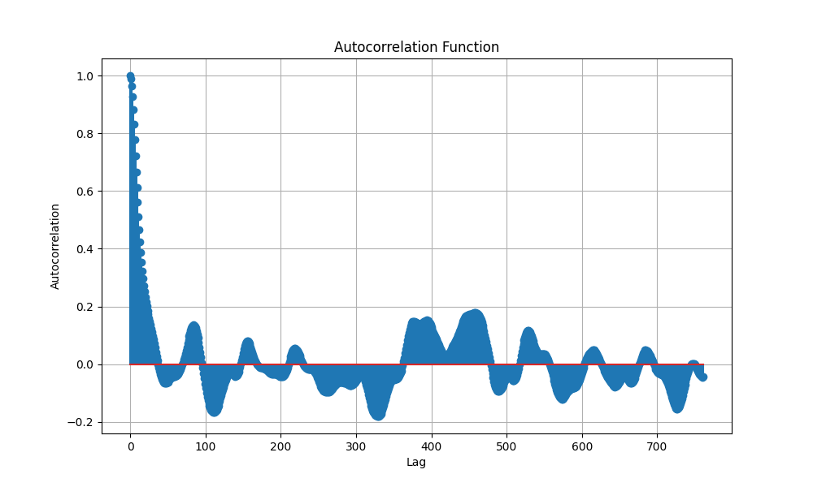
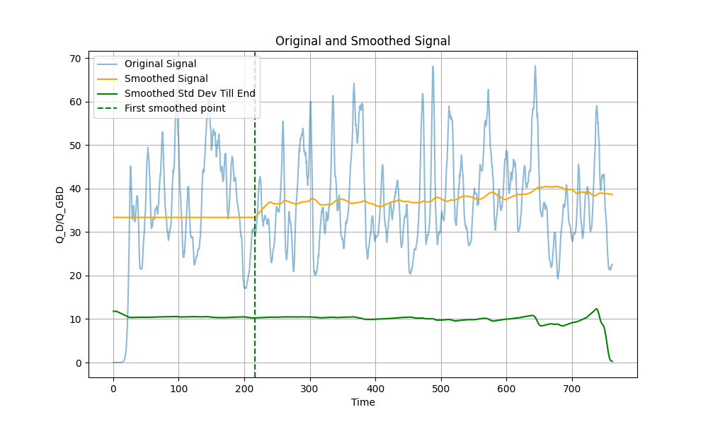
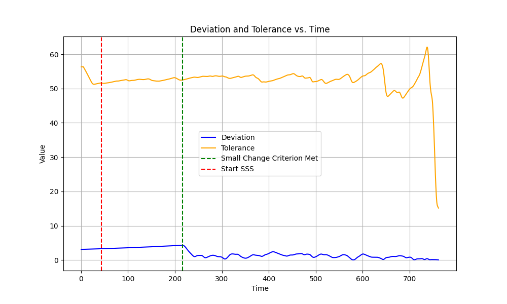
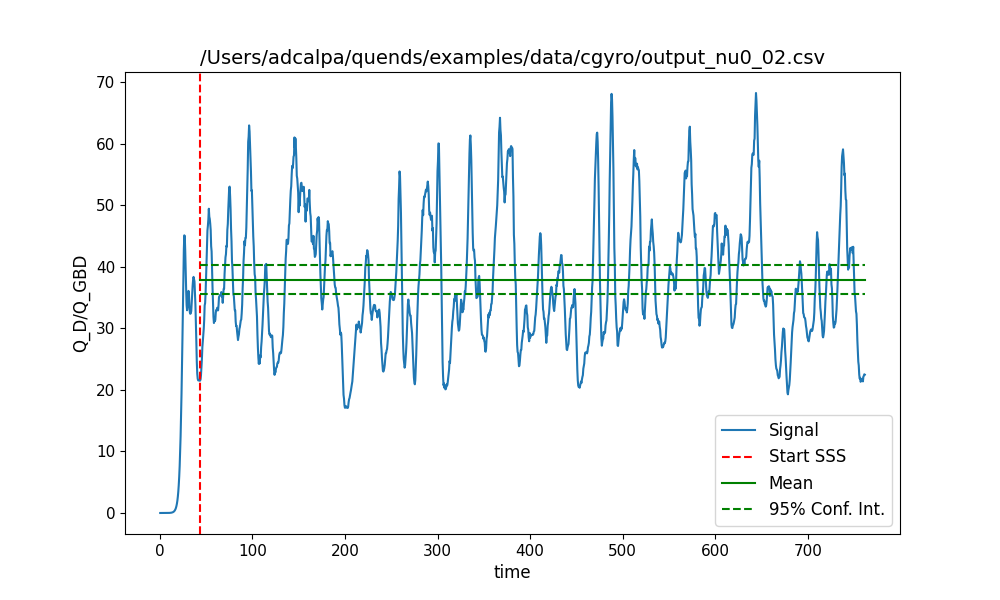
The data stream contains the following variables:
0: time
1: Q_D/Q_GBD
Original size of data stream: 1523 points.
After enforcing start time there are 1523 points left.
stats decorrelation length 108 gives smoothing window of 432 points.
Getting start of SSS based on smoothed signal:
Index where criterion is met: 431
Rolling window: 432
time where criterion is met: 216.0
time at start of SSS (adjusted for rolling window): 43.0
Most of this signal is in SSS: the mean is steady and its high standard deviation gives the steady-state criterion plenty of wiggle room.
pprint.pprint(my_stats)
{'Q_D/Q_GBD': {'ci_method': 'normal',
'confidence_interval': (35.5192927099123, 40.30162589947248),
'confidence_level': 0.95,
'effective_sample_size': 68,
'ess_blocks': 33.0,
'independence_status': 'independent',
'independent': True,
'ljungbox_lags': [5, 10],
'ljungbox_pvalue': 0.32386893745204176,
'ljungbox_pvalues': [0.7837931462743452, 0.32386893745204176],
'mean': 37.91045930469239,
'mean_uncertainty': 1.219982956520453,
'metadata': {'mitigation': 'None', 'status': 'Regular'},
'n_short_averages': 33,
'pm_std': (36.690476348171934, 39.13044226121284),
'se_effective_n': 33.0,
'se_method': 'iid_blocks',
'sss_start': np.float64(43.0),
'start_time': 0.0,
'variance': 49.115827668612724,
'window_size': 43}}
Regular signals: GX¶
A GX heat-flux trace (HeatFlux_st).
data_paths = [DATA_DIR / "gx" / "tprim_2_4.out.csv"]
data_stream = qnds.from_csv(data_paths[0], "HeatFlux_st")
print("The data stream contains the following variables:")
for column, name in enumerate(data_stream.variables()):
print(f"{column}: {name}")
col = "HeatFlux_st"
my_wrkflw = qnds.RobustWorkflow(operate_safe=False, verbosity=2)
with keep_figures():
my_wrkflw.plot_signal_basic_stats(data_stream, col, label=data_paths[0])
my_stats = my_wrkflw.process_data_stream(data_stream, col)
if not my_stats[col]["metadata"]["mitigation"] == "Drop":
my_wrkflw.plot_signal_basic_stats(
data_stream, col, stats=my_stats, label=data_paths[0]
)
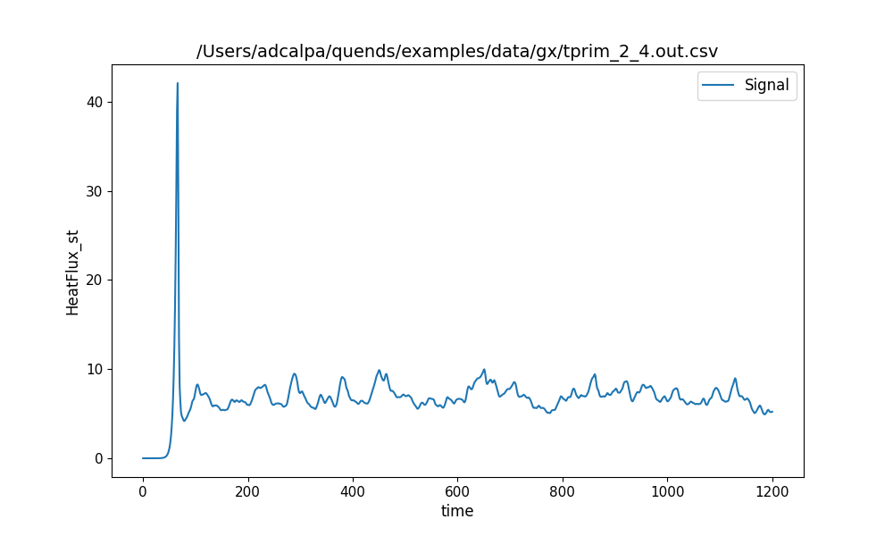
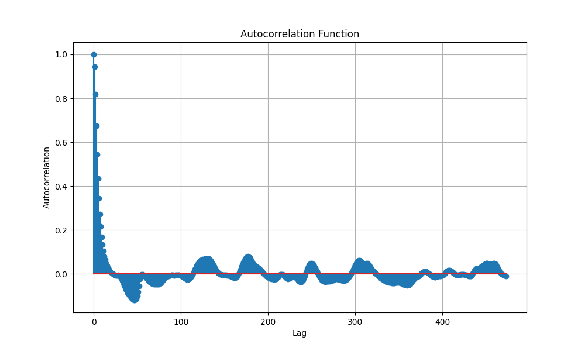
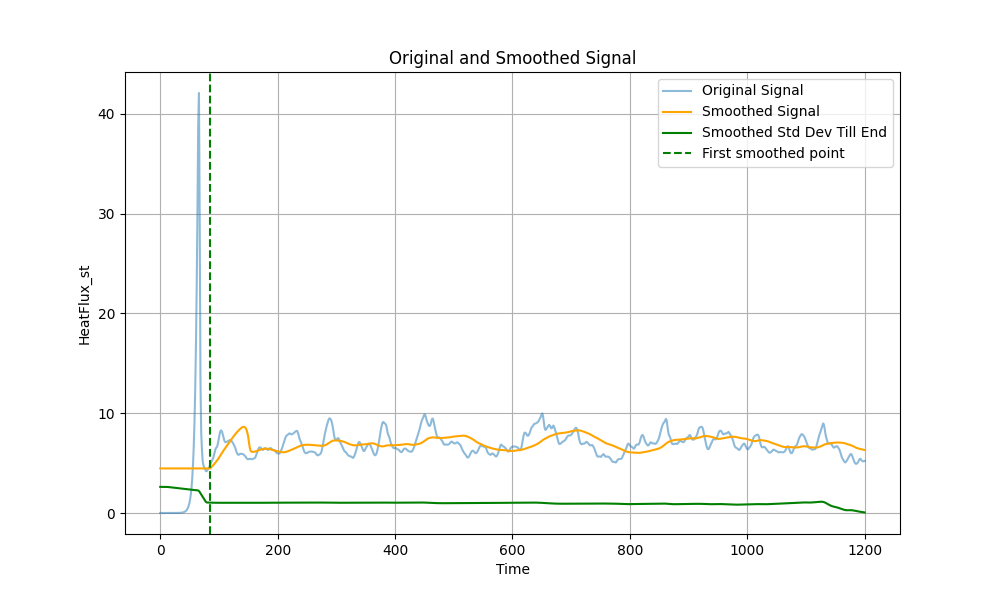
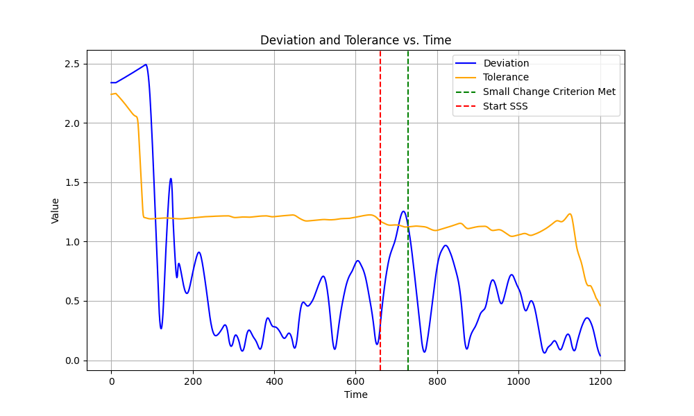
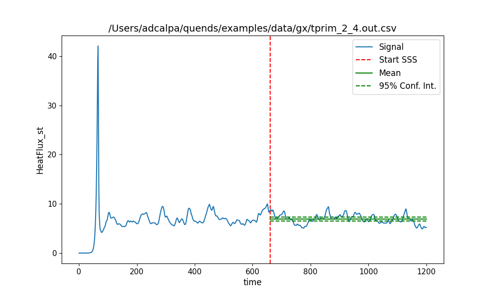
The data stream contains the following variables:
0: time
1: HeatFlux_st
Original size of data stream: 947 points.
After enforcing start time there are 947 points left.
stats decorrelation length 17 gives smoothing window of 68 points.
Getting start of SSS based on smoothed signal:
Index where criterion is met: 575
Rolling window: 68
time where criterion is met: 729.4152185935495
time at start of SSS (adjusted for rolling window): 659.6462806224445
Here the decorrelation length is short, so the smoothed signal is more variable and about half the trace is identified as steady state.
pprint.pprint(my_stats)
{'HeatFlux_st': {'ci_method': 'normal',
'confidence_interval': (6.551702979095916, 7.341478483285037),
'confidence_level': 0.95,
'effective_sample_size': 16,
'ess_blocks': 15.0,
'independence_status': 'independent',
'independent': True,
'ljungbox_lags': [5, 10],
'ljungbox_pvalue': 0.6627641836511837,
'ljungbox_pvalues': [0.6958443642828227, 0.6627641836511837],
'mean': 6.946590731190477,
'mean_uncertainty': 0.20147334290538818,
'metadata': {'mitigation': 'None', 'status': 'Regular'},
'n_short_averages': 15,
'pm_std': (6.745117388285088, 7.148064074095865),
'se_effective_n': 15.0,
'se_method': 'iid_blocks',
'sss_start': np.float64(659.6462806224445),
'start_time': 0.0,
'variance': 0.608872618522082,
'window_size': 28}}
Total running time of the script: (0 minutes 1.173 seconds)
Gallery generated by Sphinx-Gallery